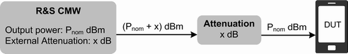

The following generator settings control the routing of signals and the generator level.
The R&S CMW provides several RF connectors on the front panel. The RF output connector and the TX module to be used are selected in the "RF Routing" section at the beginning of the generator configuration dialog.
If an R&S CMWS is connected, you can route the generated signal to up to eight RF output connectors of the R&S CMWS in parallel.
See also "Signal Path Settings".
Defines the value of an external attenuation (or gain, if the value is negative) in the output path. Use this setting to compensate the effect of a frequency-independent attenuating component or amplifier in the test setup, for example a cable, a test fixture or an RF shield box.
Additional settings for compensation of a frequency-dependent attenuation/gain are provided by the base system of the instrument. They allow you to define correction tables containing pairs of frequencies and associated attenuation/gain values.
If you activate a correction table for an output connector, the correction value derived from the table and the "External Attenuation" from the generator settings are added. Correction values for intermediate frequencies between two frequency entries are calculated using linear interpolation. For frequencies higher than the highest frequency entry in the table, or lower than the lowest frequency entry, the correction value associated with the highest / lowest frequency entry is used.
With a total external attenuation of x dB, the generator power is increased by x dB so that the generator power differs from the displayed output power. The displayed output power is available at the input of the DUT. Negative values of the external attenuation decrease the effective generator power.

Frequency-independent attenuations are defined as part of the generator settings, refer to the description of the generator application. Frequency-dependent correction tables are administrated in the setup dialog or via remote commands (...:FDCorrection:...).
While a correction table is active for the connector currently used by an application, the GUI of the application displays the table name together with the frequency-independent attenuation setting.
You can display the table entries by clicking the button "FDCorr!".